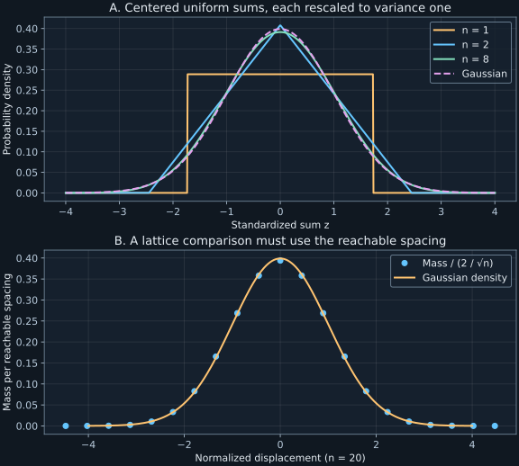

Chapter 3 · Lecture 4
The central limit theorem and the diffusion scale
A transport calculation replaces many independent microscopic steps by a Gaussian propagator. The replacement is attractive because one diffusion coefficient predicts the entire central profile. It can still be wrong by a factor of two at every reachable lattice point, assign probability outside a finite-step support, or fail completely when one step dominates the variance. The task is to identify the scaling and the kind of approximation that the Gaussian limit actually licenses.
Lecture 4 develops Gaussian sums, uniform sums, and isotropic three-dimensional random flights in that order. The full caption track and two timed stills were inspected. The one-dimensional lattice comparison and numerical error audit are teaching extensions. The stated convergence theorem is qualified separately from density approximations and path-level limits.
3.1 Adding Gaussians is exact before any limit L4 0:49
Let $X_1,\ldots,X_n$ be independent Gaussian variables with means $\mu_j$ and variances $\sigma_j^2$, and let $a_j$ be real fixed coefficients. Define the measured sum $S_n=\sum_{j=1}^na_jX_j$. Its mean is $m_n=\sum_j a_j\mu_j$, and independence gives variance $v_n=\sum_j a_j^2\sigma_j^2$. The coefficients carry whatever units convert each input into the common output coordinate. Assume $v_n\gt0$ when standardizing.
Use the positive-sign characteristic function from chapter 2. Independence factors it as $\phi_{S_n}(k)=\prod_j\exp(ika_j\mu_j-k^2a_j^2\sigma_j^2/2)=\exp(ikm_n-k^2v_n/2)$. This is the characteristic function of the stated Gaussian. Translation and scaling give $\phi_{Z_n}(k)=\exp(-k^2/2)$. No large-$n$ approximation occurred. ∎
Independent inputs with variances one and four, combined as $X_1-2X_2$, give variance seventeen. Multiplying the second coefficient by minus two changes its mean contribution's sign but multiplies its variance by four. This checks the squared coefficients. If the inputs are correlated, the variance has additional terms $2\sum_{i\lt j}a_ia_j\operatorname{Cov}(X_i,X_j)$. A jointly Gaussian vector still gives Gaussian linear combinations, but Gaussian marginals alone do not imply a jointly Gaussian vector.
The exact theorem does not explain why non-Gaussian steps can produce an approximately Gaussian displacement. That requires a limit theorem. It also requires declaring what remains fixed as the number of terms grows.
3.2 A finite-variance central limit theorem L4 8:11
Assume now that $X_1,X_2,\ldots$ are independent and identically distributed, abbreviated iid, with common finite mean $\mu$ and variance $0\lt\sigma^2\lt\infty$. Their distribution may be discrete or continuous. Define $Y_j=(X_j-\mu)/\sigma$ and $Z_n=n^{-1/2}\sum_{j=1}^nY_j$. The normalization keeps mean zero and variance one for every $n$. Without centering, the mean grows as $n$; without the square-root scaling, the variance grows as $n$.
The finite second moment permits the small-argument expansion $\phi_Y(h)=1-h^2/2+o(h^2)$. One justification avoids assuming a third moment. Write $e^{ix}=1+ix-x^2/2+r(x)$, where $r(x)/x^2\to0$ as $x\to0$ and $|r(x)|\leq Cx^2$ for a fixed finite constant $C$. Splitting into $|x|\leq1$ and $|x|\gt1$ supplies such a bound. Thus $r(hY)/h^2\to0$ pointwise and is dominated by $CY^2$, an integrable variable. Dominated convergence proves the expansion after taking expectations; $\mathbb E[Y]=0$ and $\mathbb E[Y^2]=1$ fix its coefficients.
Independence now gives $\phi_{Z_n}(k)=[\phi_Y(k/\sqrt n)]^n=[1-k^2/(2n)+o(1/n)]^n\to e^{-k^2/2}$ at every fixed real $k$. The final implication uses the cited Lévy continuity theorem: pointwise convergence of characteristic functions to the characteristic function of a probability law implies convergence in distribution to that law. The theorem is stated in Scott Sheffield's MIT 18.175 notes, PDF pages 41–43; pages 45–47 connect the finite-second-moment expansion to this central limit theorem. Applying it to the Gaussian transform completes the argument. ∎
The transform expansion is proved here; the continuity theorem is an invoked analytical result, rather than an unjustified exchange of a limit and a Fourier inversion integral. No smooth density for $Z_n$ was assumed. For a lattice sum, such a density does not exist at finite $n$, yet convergence of cumulative probabilities still makes sense.
The iid assumptions keep no one term exceptional. Finiteness of each variance alone is insufficient for arbitrary nonidentical arrays: a single non-Gaussian summand can retain most of the total variance. Additional negligibility conditions are needed for those generalizations. Nor does convergence in distribution give a universal finite-sample error, a relative error for very small probabilities, or a guarantee that probabilities beyond a growing threshold are Gaussian.
3.3 A uniform distribution becomes triangular before becoming Gaussian L4 11:00
Take iid $U_j$ uniform on $[0,1]$, so their density is one on that interval and zero elsewhere. Integration gives mean $1/2$ and variance $1/3-1/4=1/12$. For the sum $S_2=U_1+U_2$, the convolution is the length of the overlap of $[0,1]$ with $[s-1,s]$. Consequently,
$$\rho_{S_2}(s)=\begin{cases}s,&0\leq s\leq1,\\2-s,&1\lt s\leq2,\\0,&\text{otherwise}.\end{cases}\tag{3.1}$$The overlap grows up to $s=1$ and then shrinks. The triangular area is one, and the variance is $1/6$, agreeing with independent variance addition. A flat single-input law has become peaked without any input preferring the midpoint. More combinations of input values produce central sums than extreme sums.
For arbitrary $n$, standardize as $Z_n=(\sum_jU_j-n/2)/\sqrt{n/12}$. A centered uniform variable has characteristic function $\mathbb E[e^{ik(U-1/2)}]=\sin(k/2)/(k/2)$, obtained by integrating the exponential between $-1/2$ and $1/2$. Applying the scaling and multiplying $n$ factors gives
$$\phi_{Z_n}(k)=\left[\frac{\sin(k\sqrt{3/n})}{k\sqrt{3/n}}\right]^n.\tag{3.2}$$The ratio has value one at zero by continuity. Since $\sin x/x=1-x^2/6+O(x^4)$, (3.2) tends to $e^{-k^2/2}$. For every finite $n$, however, $Z_n$ lies in $[-\sqrt{3n},\sqrt{3n}]$. The limiting law's unbounded support arises because these standardized bounds recede to infinity. It does not make an impossible finite-$n$ sum possible.
Figure 3.1 compares the standardized densities for one, two, and eight uniforms. Standardizing matters: plotting unscaled sums would mix the changing shape with a drifting mean and a growing width. A finite-$n$ cumulant check gives excess kurtosis $-6/(5n)$, derived in Exercise 3.3. Its decrease is one informative check of central Gaussian behavior, not a proof of all tail probabilities.

3.4 Isotropic random flights and the geometry of one step L4 31:48
Consider independent three-dimensional step vectors $\mathbf R_j$, each of fixed length $\ell\gt0$ and uniformly distributed in direction. Let $\mathbf X_n=\sum_{j=1}^n\mathbf R_j$ be the displacement after $n$ steps, and let $\delta t\gt0$ be the time between steps. Length has units meters and time seconds. Rotational symmetry gives $\mathbb E[\mathbf R_j]=\mathbf0$. Independence then removes every distinct-step cross term in the squared sum:
$$\mathbb E[|\mathbf X_n|^2]=\sum_j\mathbb E[|\mathbf R_j|^2]+2\sum_{i\lt j}\mathbb E[\mathbf R_i]\cdot\mathbb E[\mathbf R_j]=n\ell^2.\tag{3.3}$$This is the mean-square displacement, the sum of the three coordinate variances. It is not the variance of the distance $|\mathbf X_n|$, whose mean is generally positive. In an isotropic model each coordinate contributes $n\ell^2/3$. The root-mean-square displacement grows as $\sqrt n$, although the path has traveled total step length $n\ell$.
The one-step probability is concentrated on a sphere. In delta notation its volume density is $\rho_1(\mathbf r)=\delta(|\mathbf r|-\ell)/(4\pi\ell^2)$. Integrating with volume element $r^2dr\,d\Omega$ gives one, and the delta supplies the extra inverse-length unit needed for an inverse-volume density. To calculate its characteristic function, orient the polar axis along the Fourier vector $\mathbf k$, and write $q=|\mathbf k|$. The direction cosine $u$ is uniform on $[-1,1]$, giving
$$\phi_1(\mathbf k)=\frac12\int_{-1}^{1}e^{iq\ell u}\,du=\frac{\sin(q\ell)}{q\ell},\qquad\phi_{\mathbf X_n}(\mathbf k)=\left[\frac{\sin(q\ell)}{q\ell}\right]^n.\tag{3.4}$$The same sinc function appears as for a uniform scalar because the projection of an isotropic three-dimensional fixed-length step onto a fixed axis is uniform between $-\ell$ and $\ell$. This is a statement about that projection; the three coordinates of one step are not independent, since their squared sum is fixed.
3.5 The diffusion limit fixes squared distance per unit time L4 53:36
Hold elapsed time $t=n\delta t\gt0$ fixed while $n\to\infty$, and let $\ell\to0$. Expansion of (3.4) gives $\log\phi_{\mathbf X_n}(\mathbf k)=-n\ell^2q^2/6+O(n\ell^4q^4)$ for each fixed $\mathbf k$. A nontrivial limit therefore holds the positive diffusion coefficient $D=\ell^2/(6\delta t)$ fixed in three dimensions. Its units are square meters per second, and $n\ell^4\to0$ under this scaling. The transform tends to $e^{-Dtq^2}$.
Inverting that Gaussian transform is easiest in Cartesian coordinates, because the three factors separate. In $d$ dimensions the isotropic limiting density has the form
$$\rho(\mathbf x,t)=\frac{\exp[-|\mathbf x|^2/(4Dt)]}{(4\pi Dt)^{d/2}},\qquad \partial_t\rho=D\nabla^2\rho,\qquad \mathbb E[|\mathbf X(t)|^2]=2dDt.\tag{3.5}$$Each coordinate is a centered Gaussian of variance $2Dt$, so the product density normalizes to one and proves the last identity. Direct differentiation verifies the diffusion equation: $\partial_t\rho/\rho=-d/(2t)+|\mathbf x|^2/(4Dt^2)$, while $\nabla^2\rho/\rho=-d/(2Dt)+|\mathbf x|^2/(4D^2t^2)$. The initial point mass is interpreted weakly: for bounded continuous $f$, $\int f(\mathbf x)\rho(\mathbf x,t)d\mathbf x\to f(\mathbf0)$ as $t\downarrow0$. This follows by writing $\mathbf x=\sqrt{2Dt}\,\mathbf z$ and applying dominated convergence to the normalized standard Gaussian measure.
For an isotropic fixed-length flight in $d$ dimensions, each coordinate step variance is $\ell^2/d$, so matching coordinate variance to $2Dt$ gives $D=\ell^2/(2d\delta t)$. In one dimension, steps $\pm\ell$ therefore give $D=\ell^2/(2\delta t)$, rather than the three-dimensional factor six. Equation (3.5) uses the per-coordinate diffusion coefficient in every dimension.
The limit removes a microscopic speed scale. If steps are interpolated as straight flights of speed $\ell/\delta t$, that speed diverges as $\delta t^{-1/2}$ at fixed $D$. Holding a finite speed instead gives $\ell=v\delta t$, and then $D\to0$ in this independent-step scaling. A finite-speed transport model requires an additional directional persistence mechanism, treated in chapter 19. The calculation here establishes fixed-time distributional convergence; a theorem about convergence of entire random paths is stronger.
3.6 A density cannot be compared directly with a point mass
A one-dimensional symmetric walk has $X_n=\ell\sum_{j=1}^{n}\epsilon_j$, where the independent signs $\epsilon_j$ are equally likely to be plus or minus one. If $B_n$ counts positive steps, then $B_n\sim\operatorname{Binomial}(n,1/2)$ and $X_n=\ell(2B_n-n)$. Its reachable locations differ by $2\ell$, not $\ell$. At even $n$ only even multiples of $\ell$ are reached; at odd $n$ only odd multiples are reached. This is the parity constraint.
In a central region for large $n$, the local Gaussian comparison therefore has the form $\Pr(X_n=x)\approx2\ell\rho(x,t)$ at reachable locations. At unreachable locations the exact probability remains zero. The factor $2\ell$ converts density per length to probability mass in a reachable cell. It is not optional normalization. In standardized units $Z_n=X_n/(\ell\sqrt n)$, the corresponding cell width is $2/\sqrt n$.
For $n=50$, the exact central mass is 0.11227517 and the parity-aware approximation is 0.11283792. Dividing either mass by the elementary spacing $1/\sqrt n$ instead of the reachable spacing would produce twice the Gaussian density near the center. Yet cumulative probabilities would still converge: the central limit theorem averages over the increasingly fine jump structure. A local probability approximation and a cumulative convergence statement answer different questions.
3.7 Laboratory: separate central convergence, parity, and support
The laboratory evaluates exact binomial probabilities for standardized symmetric walks, and exact uniform-sum cumulative distributions. It writes JSON results and a numerical report beside the program. Run python code/ch03_diffusion.py. Its inputs are fixed synthetic parameters, its only effects are these output files, and it makes no network calls or Monte Carlo draws.
n=10: CDF distance=0.12304688, corrected grid error=0.00268616 n=50: CDF distance=0.05613759, corrected grid error=0.00054170 n=200: CDF distance=0.02817424, corrected grid error=0.00013603 n=1000: CDF distance=0.01261251, corrected grid error=0.00002717
The cumulative distribution distance checks the Gaussian against both sides of each exact lattice jump. A continuous curve cannot remove that jump. The smaller “corrected grid error” instead compares the exact cumulative probability at each reachable location with a Gaussian boundary halfway to the next reachable location. This continuity correction improves those selected event probabilities, but it is not the supremum distance between the two cumulative distribution functions. Reporting it under the same name would conceal the residual jump error.
A second check inverts (3.2) numerically for four uniforms at standardized value zero. Truncating the Fourier integral at $|k|=100$ gives density 0.384900110; the independent exact convolution density is 0.384900179. Agreement tests the transform normalization and rescaling, while the finite cutoff leaves a controlled numerical target for refinement. It does not justify exchanging a limit and an integral in the theorem.
The following calculation exposes parity with a directly computable central mass. It accepts no input, prints the exact mass and local approximation, and does not write files:
import numpy as np
from scipy.stats import binom, norm
n = 50
exact = binom.pmf(n//2, n, 0.5)
reachable_spacing = 2/np.sqrt(n)
approximation = reachable_spacing*norm.pdf(0)
print(f"Exact: {exact:.8f}")
print(f"Local Gaussian: {approximation:.8f}")Exact: 0.11227517 Local Gaussian: 0.11283792
The full program additionally checks normalization and variance exactly to numerical precision. These checks catch a wrong scaling constant before visual closeness becomes persuasive. Figure 3.1 is reproduced separately by python figures/ch03_diffusion.py; it uses theoretical probabilities and densities, not sampled histograms.
3.8 What the Gaussian limit captures and misses
The iid theorem determines the standardized central distribution at fixed thresholds. The diffusion scaling identifies a continuum propagator from a microscopic covariance per unit time. Together they explain a common Gaussian profile under independence and finite variance. They do not provide a universal number of steps needed for a chosen tolerance.
Finite support and lattice parity remain exact constraints at finite step number. Rare-event relative errors, persistent directions, state-dependent waiting times, correlated increments, and heavy-tailed jumps require additional analysis. In particular, an unbounded step distribution can still have finite variance, while a bounded distribution need not give an accurate Gaussian tail at a small finite sample. Tail boundedness and central-limit attraction are different properties. Chapter 4 examines stable alternatives when finite-variance scaling fails.
3.9 Exercises with worked solutions
Exercise 3.1 — Gaussian marginals without a Gaussian sum (conceptual)
Let $G$ be standard Gaussian and let $S$ be an independent sign equally likely to be plus or minus one. Define $X=G$ and $Y=SG$. Show that both marginals are Gaussian and uncorrelated, but $X+Y$ is not Gaussian.
Worked solution
Symmetry makes $SG$ have the same law as $G$. Both means vanish and $\mathbb E[XY]=\mathbb E[S]\mathbb E[G^2]=0$, so the covariance is zero. Conditional on $S=-1$, the sum is identically zero; conditional on $S=1$, it is $2G$. Thus its law has an atom of mass $1/2$ at zero and a Gaussian continuous part of weight $1/2$. A nondegenerate Gaussian has no atoms. The variance is two, matching variance addition for uncorrelated variables, yet the law is not Gaussian. Independence in Proposition 3.1 cannot be replaced by uncorrelated Gaussian marginals.
Exercise 3.2 — Finite variance in every row is insufficient (conceptual)
For each integer $n$, let a row contain a symmetric sign $R$ and $n-1$ zeros. All variables in that row are independent and have finite variance. Center the row sum and divide by its standard deviation. Does it approach a Gaussian?
Worked solution
The sum is always $R$, with mean zero and variance one. Standardization changes nothing, and its two-point law remains fixed for all $n$. In particular, its cumulative probability at $1/2$ is $1/2$, while a standard Gaussian cumulative probability there exceeds $1/2$. There is no convergence to the Gaussian. The row is not identically distributed, and the lone sign carries all the variance. A general nonidentical-variable theorem needs a hypothesis that suppresses such dominant contributions. Counting summands alone supplies no averaging mechanism.
Exercise 3.3 — Excess kurtosis of a uniform sum (derive)
Derive the excess kurtosis $-6/(5n)$ of the standardized sum of $n$ iid uniforms on $[0,1]$. Explain why its decay is consistent with, but does not prove, the central limit theorem.
Worked solution
For $A=U-1/2$, direct integration gives $\mathbb E[A^2]=1/12$ and $\mathbb E[A^4]=1/80$. Its fourth cumulant is $1/80-3/144=-1/120$. Adding $n$ independent copies multiplies that cumulant by $n$. Dividing the sum by $\sqrt{n/12}$ multiplies the fourth cumulant by $(12/n)^2$, giving $-6/(5n)$. The standardized variance is one, so this fourth cumulant equals excess kurtosis. Its limit zero matches a Gaussian fourth-moment relation. The three-point example in chapter 2 shows why that one relation cannot establish convergence of the full law; the characteristic-function proof supplies the missing distributional statement.
Exercise 3.4 — Derive the diffusion coefficient from a covariance (derive)
Suppose iid zero-mean vector steps in $d$ dimensions have covariance $2D\delta t\,I_d$, where $I_d$ is the identity matrix and $D\gt0$. Derive the mean-square displacement after $n$ steps. Specialize to isotropic fixed-length steps and recover the dimension factor.
Worked solution
Covariances add under independence, so the sum has covariance $2Dn\delta t\,I_d$. Taking its trace gives $\mathbb E[|\mathbf X_n|^2]=2dDt$ with $t=n\delta t$. For an isotropic step of fixed length $\ell$, rotational symmetry makes its covariance $cI_d$, and its trace is $dc=\ell^2$. Thus $c=\ell^2/d$. Equating it to $2D\delta t$ gives $D=\ell^2/(2d\delta t)$. This second-moment identity alone does not prove a Gaussian propagator: distributional convergence additionally needs conditions controlling higher or large-step contributions.
Exercise 3.5 — Choose a cumulative approximation honestly (compute/design)
Among $n=10,50,200,1000$, choose the smallest step count whose uncorrected cumulative distribution distance from the standard Gaussian is below 0.03. Can the much smaller continuity-corrected error be reported as that same distance?
Worked solution
The lab gives distances 0.12304688, 0.05613759, 0.02817424, and 0.01261251. Therefore 200 is the smallest listed acceptable count. At 50 steps the corrected grid error is already only 0.00054170, but that compares a selected lattice event with a shifted Gaussian boundary. It does not compare both cumulative distributions at the same real argument over the entire line. Since the exact central jump at 50 steps has size 0.11227517, any continuous approximation must differ by at least half that size on one side of the jump. That lower bound is 0.056137585, agreeing with the reported supremum distance and excluding the smaller figure as a substitute.
Exercise 3.6 — Refine the microscopic clock (compute/design)
A one-dimensional walk uses $\delta t=0.01$ seconds and diffusion coefficient $D=0.5$ square meters per second. Find its step length and one-second mean-square displacement. Refine the time step by a factor of four at the same $D$. What happens to step length, maximum reachable distance at one second, and flight speed?
Worked solution
The relation $\ell=\sqrt{2D\delta t}$ gives $\ell=0.1$ meter. One second contains 100 steps, so $\mathbb E[X^2]=100(0.1)^2=1$ square meter. The maximum reachable magnitude is ten meters, although reaching it requires every sign to agree. On changing $\delta t$ to 0.0025 seconds, the step length becomes 0.05 meter and the step count becomes 400. The mean-square displacement remains one, while the maximum magnitude becomes twenty meters.
If interpolated as flights, the speeds are ten and twenty meters per second respectively. The speed grows as the step length shrinks, because the clock shrinks faster. This calculation explains how an unbounded-support continuum kernel can emerge from finite-support approximants. It also prevents interpreting the diffusion limit as a limit at fixed microscopic transport speed.
3.10 Sources and attribution
- V. Balakrishnan, Gaussian distribution and the central limit theorem, lecture 4, IIT Madras, NPTEL 115106089. Caption sequence determines the main topic order.
- Official instructor notes, PDF pages 32–39: Gaussian closure, iid theorem, uniform sums, three-dimensional flights, and diffusion scaling.
- Scott Sheffield, MIT 18.175, Characteristic functions and central limit theorem, PDF pages 41–43 for the continuity theorem and 45–47 for the second-moment expansion and iid limit. The continuity theorem is cited, not proved here.
Local lattice probabilities, approximation errors, counterexamples, and exercises are teaching constructions. The source's broader informal generalizations are restricted here to explicit hypotheses. No claim of complete path-level convergence or quantitative universal tail accuracy is made.